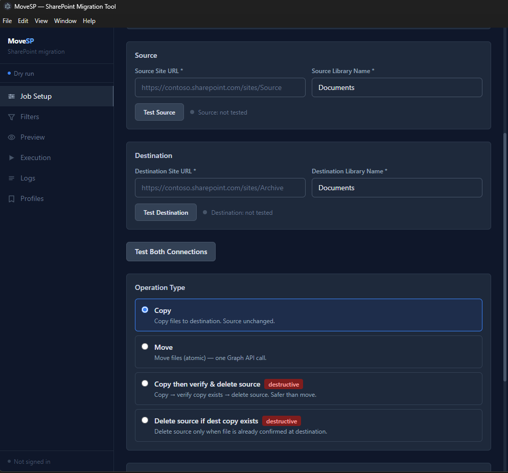
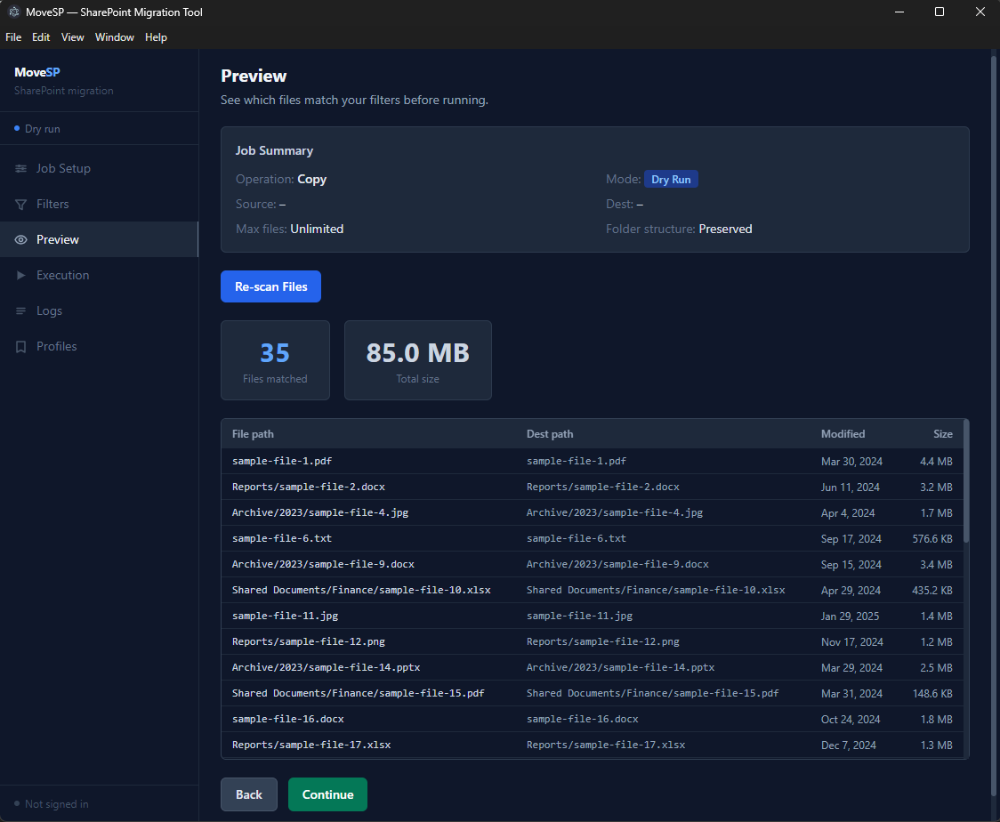

Archiving a growing SharePoint site
A client's SharePoint site had grown to around 1TB across roughly 840 folders. Completed projects sat alongside active ones, and the library was becoming harder to navigate.
The goal wasn't to migrate the entire site. Older content needed to move to an archive site so the working library stayed focused on active projects.
The rule was simple: files not modified in the last 12 months move to a new SharePoint archive site in the same tenant.
Options considered
The obvious approaches were reviewed.
A script was the best fit. Graph supports same-tenant moves, and PnP.PowerShell provides the commands to copy, verify, and delete safely.
Building it with Claude
The script was built with Claude.
The process was simple: describe the problem clearly and provide the right context for the PnP.PowerShell module.
The first prompt asked Claude to outline a safe archive process. Once that structure was clear, the script was filled in and refined.
Within about an hour the script could archive older files while leaving active project work untouched.
We are building a PowerShell script that archives files from one SharePoint site to another in the same tenant using PnP.PowerShell. Requirements: - Source site: /sites/projects - Destination site: /sites/archive - Only archive files not modified in the last 12 months - Copy files first - Verify the copy succeeded - Generate a deletion report showing what would be removed - Wait for user confirmation before deleting anything - Dry-run mode by default - Log each operation with timestamp to console and CSV - Stop and report if verification fails, never delete unverified files Before writing the script, outline the workflow for this process.
Script 1 — Copy
Connects to both sites, queries files not modified in the last 12 months using a date filter, and copies them to the archive. Dry-run by default.
param( [string]$ClientId = "a7f2e1b4-9c3d-4e8f-b5a6-2d1c7e9f0b3a", [string]$SourceSite = "https://contoso.sharepoint.com/sites/RentalFiles", [string]$DestinationSite = "https://contoso.sharepoint.com/sites/ContosoArchive", [string]$SourceLibrary = "Shared Documents", [string]$DestinationLibrary = "Archive", [int] $OlderThanDays = 365, [bool] $DryRun = $true, [string]$LogPath = ".\SharePointArchiveLog.csv" )
function Write-Log { param([string]$Action, [string]$Status, [string]$SourceUrl, [string]$TargetUrl, [string]$Modified, [string]$Message) [PSCustomObject]@{ Timestamp = (Get-Date).ToString("yyyy-MM-dd HH:mm:ss") Action = $Action; Status = $Status; SourceUrl = $SourceUrl TargetUrl = $TargetUrl; Modified = $Modified; Message = $Message } | Export-Csv -Path $LogPath -NoTypeInformation -Append -Encoding UTF8 } function Ensure-FolderPath { param([string]$LibraryName, [string]$FolderPathRelativeToLibrary, $Connection) if ([string]::IsNullOrWhiteSpace($FolderPathRelativeToLibrary)) { return } $parts = $FolderPathRelativeToLibrary -split "/" $currentPath = "" foreach ($part in $parts) { if ([string]::IsNullOrWhiteSpace($part)) { continue } $parentPath = $currentPath $currentPath = if ($currentPath) { "$currentPath/$part" } else { $part } $folderUrl = "$LibraryName/$currentPath" try { Get-PnPFolder -Url $folderUrl -Connection $Connection -ErrorAction Stop | Out-Null } catch { $parent = if ($parentPath) { "$LibraryName/$parentPath" } else { $LibraryName } Add-PnPFolder -Name $part -Folder $parent -Connection $Connection | Out-Null } } } if (Test-Path $LogPath) { Remove-Item $LogPath -Force } $sourceUri = [System.Uri]$SourceSite $destUri = [System.Uri]$DestinationSite $sourceLibraryRoot = "$($sourceUri.AbsolutePath.TrimEnd('/'))/$SourceLibrary" $destLibraryRoot = "$($destUri.AbsolutePath.TrimEnd('/'))/$DestinationLibrary" $cutoff = (Get-Date).AddDays(-$OlderThanDays).ToUniversalTime().ToString("yyyy-MM-ddTHH:mm:ssZ") Write-Host "Connecting to source site..." $SourceConn = Connect-PnPOnline -Url $SourceSite -ClientId $ClientId -Interactive -ReturnConnection Write-Host "Connecting to destination site..." $DestConn = Connect-PnPOnline -Url $DestinationSite -ClientId $ClientId -Interactive -ReturnConnection $camlQuery = @" <View Scope='RecursiveAll'><Query><Where><And> <Eq><FieldRef Name='FSObjType'/><Value Type='Integer'>0</Value></Eq> <Lt><FieldRef Name='Modified'/><Value Type='DateTime' IncludeTimeValue='TRUE'>$cutoff</Value></Lt> </And></Where></Query><RowLimit Paged='TRUE'>2000</RowLimit></View> "@ $items = Get-PnPListItem -List $SourceLibrary -Query $camlQuery -PageSize 2000 -Connection $SourceConn if (-not $items -or $items.Count -eq 0) { Write-Host "No matching files found."; return } Write-Host "Found $($items.Count) file(s) older than $OlderThanDays days." foreach ($item in $items) { $sourceUrl = $item["FileRef"]; $modified = $item["Modified"] if ([string]::IsNullOrWhiteSpace($sourceUrl)) { continue } $relPath = $sourceUrl -replace "^$([regex]::Escape($sourceLibraryRoot))/?","" $folderRel = (Split-Path $relPath -Parent) -replace "\\/","/" if ($folderRel -eq ".") { $folderRel = "" } $targetUrl = if ($folderRel) { "$destLibraryRoot/$folderRel" } else { $destLibraryRoot } if ($DryRun) { Write-Host "[DRY RUN] $sourceUrl → $targetUrl" Write-Log -Action Copy -Status DryRun -SourceUrl $sourceUrl -TargetUrl $targetUrl -Modified $modified -Message "Planned copy only" continue } try { if ($folderRel) { Ensure-FolderPath -LibraryName $DestinationLibrary -FolderPathRelativeToLibrary $folderRel -Connection $DestConn } Copy-PnPFile -SourceUrl $sourceUrl -TargetUrl $targetUrl -Force -Connection $SourceConn Write-Host "[OK] $sourceUrl" Write-Log -Action Copy -Status Success -SourceUrl $sourceUrl -TargetUrl $targetUrl -Modified $modified -Message "Copied successfully" } catch { Write-Warning "[FAILED] $sourceUrl :: $($_.Exception.Message)" Write-Log -Action Copy -Status Failed -SourceUrl $sourceUrl -TargetUrl $targetUrl -Modified $modified -Message $_.Exception.Message } } Write-Host "Done. Log: $LogPath"
Script 2 — Verify & Delete
Runs after the copy is complete. Re-queries the same date filter, confirms each file exists at the destination before removing the source. Dry-run by default.
param( [string]$ClientId = "a7f2e1b4-9c3d-4e8f-b5a6-2d1c7e9f0b3a", [string]$SourceSite = "https://contoso.sharepoint.com/sites/RentalFiles", [string]$DestinationSite = "https://contoso.sharepoint.com/sites/ContosoArchive", [string]$SourceLibrary = "Shared Documents", [string]$DestinationLibrary = "Archive", [int] $OlderThanDays = 365, [bool] $DryRun = $true, [string]$LogPath = ".\SharePointDeleteVerifiedLog_$(Get-Date -Format 'yyyyMMdd_HHmmss').csv" )
function Write-Log { param([string]$Action, [string]$Status, [string]$SourceUrl, [string]$DestinationUrl, [string]$Modified, [string]$Message) [PSCustomObject]@{ Timestamp = (Get-Date).ToString("yyyy-MM-dd HH:mm:ss") Action = $Action; Status = $Status; SourceUrl = $SourceUrl DestinationUrl = $DestinationUrl; Modified = $Modified; Message = $Message } | Export-Csv -Path $LogPath -NoTypeInformation -Append -Encoding UTF8 } function Test-DestinationFileExists { param([string]$DestinationFileUrl, $Connection) try { Get-PnPFile -Url $DestinationFileUrl -AsListItem -Connection $Connection -ErrorAction Stop | Out-Null; return $true } catch { return $false } } $SourceConn = Connect-PnPOnline -Url $SourceSite -ClientId $ClientId -Interactive -ReturnConnection $DestConn = Connect-PnPOnline -Url $DestinationSite -ClientId $ClientId -Interactive -ReturnConnection $sourceLibraryRoot = "$([System.Uri]$SourceSite).AbsolutePath.TrimEnd('/'))/$SourceLibrary" $destLibraryRoot = "$([System.Uri]$DestinationSite).AbsolutePath.TrimEnd('/'))/$DestinationLibrary" $cutoff = (Get-Date).AddDays(-$OlderThanDays).ToUniversalTime().ToString("yyyy-MM-ddTHH:mm:ssZ") $camlQuery = @" <View Scope='RecursiveAll'><Query><Where><And> <Eq><FieldRef Name='FSObjType'/><Value Type='Integer'>0</Value></Eq> <Lt><FieldRef Name='Modified'/><Value Type='DateTime' IncludeTimeValue='TRUE'>$cutoff</Value></Lt> </And></Where></Query><RowLimit Paged='TRUE'>2000</RowLimit></View> "@ $items = Get-PnPListItem -List $SourceLibrary -Query $camlQuery -PageSize 2000 -Connection $SourceConn if (-not $items -or $items.Count -eq 0) { Write-Host "No matching files found."; return } Write-Host "Found $($items.Count) file(s). Processing..." $counter = 0 foreach ($item in $items) { $counter++ Write-Host "$counter / $($items.Count)" $sourceUrl = $item["FileRef"]; $modified = $item["Modified"] if ([string]::IsNullOrWhiteSpace($sourceUrl)) { continue } $relPath = ($sourceUrl -replace "^$([regex]::Escape($sourceLibraryRoot))/?","") -replace "\\/","/" $destFileUrl = "$destLibraryRoot/$relPath" if (-not (Test-DestinationFileExists -DestinationFileUrl $destFileUrl -Connection $DestConn)) { Write-Warning "[SKIPPED] Destination not found: $sourceUrl" Write-Log -Action Delete -Status Skipped -SourceUrl $sourceUrl -DestinationUrl $destFileUrl -Modified $modified -Message "Destination file not found" continue } if ($DryRun) { Write-Host "[DRY RUN] Would delete: $sourceUrl" Write-Log -Action Delete -Status DryRun -SourceUrl $sourceUrl -DestinationUrl $destFileUrl -Modified $modified -Message "Destination verified, planned deletion" continue } try { Remove-PnPFile -ServerRelativeUrl $sourceUrl -Force -Connection $SourceConn Write-Host "[OK] Deleted: $sourceUrl" Write-Log -Action Delete -Status Success -SourceUrl $sourceUrl -DestinationUrl $destFileUrl -Modified $modified -Message "Destination verified, source deleted" } catch { Write-Warning "[FAILED] $sourceUrl :: $($_.Exception.Message)" Write-Log -Action Delete -Status Failed -SourceUrl $sourceUrl -DestinationUrl $destFileUrl -Modified $modified -Message $_.Exception.Message } } Write-Host "Done. Log: $LogPath"
From one-off script to reusable tool
The script worked. The project closed and the client got their archive. But it was clear this wasn't a one-off problem.
SharePoint sites grow over time, and most teams eventually need to separate active work from older content.
If the approach was solid enough to deliver the project, it made sense to package it into something reusable.
Building on what worked
The archive workflow had already been proven in production, so the next step was packaging the same logic into a reusable Windows tool.
The script and the relevant PnP.PowerShell documentation were provided to Claude as context, so it was working from patterns already validated on a live tenant.
Claude was then used to design a lightweight Windows tool that engineers could configure and run from a GUI, without needing to work directly with the PowerShell script.
Here's a working PowerShell script that archives SharePoint folders using PnP.PowerShell and the Graph API. I've also attached the relevant PnP documentation for the cmdlets used. I want to turn this into a Windows desktop tool for internal use. Engineers will run it against client tenants. Authentication should use MSAL device code flow. No credentials should be stored. The archive process is long-running and should execute as a background service while streaming progress updates to the UI. Before writing any code, what architecture would you recommend for handling long-running migration jobs and UI progress updates?
The workflow works. Let's build in job configuration to support filters and rules so the same tool can handle different client scenarios. Rules the engineer should be able to set per job: - File type inclusion/exclusion (for example skip .tmp files) - Modified date filter (for example only move files not modified in 12+ months) - Skip folders that already exist at the destination vs overwrite - Operation type: copy only, or copy → verify → delete These should be configurable in the interface and saved as part of the job profile.
The problem was simple: archive old project data safely.
The solution started as a small script. With Claude, a reusable tool was designed, tested, and ready to run in about an hour.
What would normally be a small migration project is now a repeatable process that any engineer can run in minutes.

